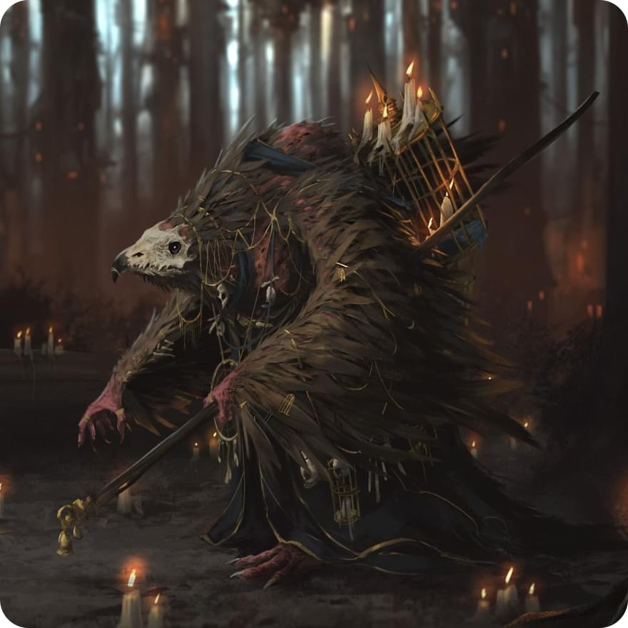

Имя: Максим

Характеристики:
Сила -1
Ловкость 0
Телосложение 0
Интеллект +2
Мудрость +1
Харизма 0
Акробатика -1
Атлетика -1
Внимательность +1
Выживыние -1
Выступление 0
Запугивание -1
История +2
Ловкость рук 0
Магия +3
Медицина +1
Обман 0
Природа +3
Проницательность +1
Религия +1
Скрытность 0
Убеждение 0
Уход за животными +2
Анализ 0
Характер:
- Меланхоличный: Ваш персонаж склонен к глубокому размышлению и часто погружается в свои мысли. Вы ощущаете тяжесть прошлых событий и некую тоску, что делает вас иногда угрюмым или задумчивым.
- Заботливый: Вы проявляете заботу и внимание к тем, кто окружает вас. Вы готовы оказать поддержку и помощь своим союзникам, а также проявляете заботу о благополучии тех, кто нуждается в помощи. Ваше сострадание делает вас надежным и преданным другом.
- Стремление к совершенству: Вы никогда не довольствуетесь малым и всегда стремитесь к совершенству в своих магических способностях. Вы упорно тренируетесь и ищете новые способы развития своих навыков, чтобы достичь максимального потенциала.
Корвус - маг воска
Корвусы - это раса ворон-человеков, и их внешность необычна и отличается от других рас.
Корвусы обладают человеческой основой, но их черты и детали напоминают ворона. У них темные волосы, часто черные или темно-синие, которые могут быть густыми и глянцевыми, словно перья. Их волосы часто организованы в прическу, напоминающую форму крыла или хохолка ворона.
Лицо корвусов имеет резкие и выразительные черты, напоминающие клюв ворона. У них узкие и проницательные глаза, окрашенные в темные оттенки, иногда с нотками голубого или зеленого. Взгляд корвусов обычно глубок и загадочен, отражая их ум и обостренное восприятие.
Кожа корвусов имеет бледный или светло-серый оттенок, с некоторыми переходами к темному синему или фиолетовому. Она обычно гладкая и безупречная, словно перья ворона.
Также важным элементом внешности корвусов являются перья, которые покрывают их тела. Перья обычно присутствуют на спинах, плечах, руках и ногах, создавая изящные контуры и придавая им грациозность. Они могут быть густыми и пушистыми, их цвет может варьироваться от черного до глубоких оттенков синего и фиолетового.
Внешность корвусов притягивает внимание своей загадочностью, интригующей комбинацией человеческих и вороновых черт. Она отражает их интеллект и связь с миром ворон, придавая им неповторимый и запоминающийся облик.
История:
В глубинах горных вершин и мрачных лесов, между туманными долинами, пробудилась раса Корвусов. Большинство из них обладало остроумием и высокоразвитым интеллектом, делая их настоящими стратегами и мастерами мудрости.
Однако их дары не ограничивались только умом. Корвусы отличались великолепным пониманием и владением магией. Они воплощали в себе энергию источников, способные вызывать мощные заклинания и манипулировать элементами природы.
Слава Корвусов распространилась далеко за пределы их родной земли. Они были известны своим мастерством в добыче золота. Их острый глаз и тонкая чуткость помогали им обнаруживать самые малейшие следы драгоценного металла, который они с умением извлекали из недр земли.
Однако недавно Корвусам выпало столкнуться с новым испытанием. Война была объявлена каджитам, другой расе, с которой Корвусы ранее поддерживали мирные отношения. Это вызвало раздор и борьбу между двумя расами, превращая их прежнюю дружбу в ожесточенное противостояние.
Теперь Корвусам предстоит использовать свой ум, магические способности и навыки добычи золота, чтобы защитить свою расу и выстоять в этой новой суровой реальности. Что ждет их в этом конфликте и как они справятся с ним – только время покажет.
Моя личная цель:
Ваша основная задача как можно скорей сбежать из этого места к лучшей жизни
Отношения:
У тебя 2 друга корвуса из твоей группы
Инвентарь:
Восковые свечи, астральный компас для навигации по планам существования, флейта, восковые песочные часы, зелье здоровья (кость хитов * 1), Амулет с символом восковой свечи
Способности:
Восковая оболочка
Ваш персонаж может создавать защитную оболочку из воска, которая увеличивает защиту его или союзника на - 2, так же повышает сопротивляемость определенным эффектам - действие до конца боя
Поджечь воск
Вы способны воспламенить созданный вами воск, от чего каждое существо попавшее под огонь, получит урон в размере - 1к6 + 2 урон огнем
Создание воска
Вы способны создавать фигуры или покрывать область воском
Заклинания воскового письма
Вы можете закодировать заклинания в воске и передать их другим персонажам. Это позволяет вам создавать запечатанные воском письма, которые могут быть размещены в ловушках или переданы союзникам для использования заклинаний в критических ситуациях.
Восковое зеркало
Ваш персонаж может создавать восковые отражения, которые помогают отразить заклинания или атаки дальнего боя обратно на их источник.
Восковые вороны
Ваш персонаж может создавать восковых воронов, они способны исполнять команды на уровне принеси-подай
Восковые путы
Ваш персонаж может создать восковые путы на противнике, после чего тот будет парализован на один ход. В случае поджога восковых пут, парализация спадает, а цель получает урон - 2к6 + 2 урон огнем
Инициатива
-1
Кость хитов
1к8
Экипировка:
Оружие (посохи, волшебные палочки):
Посох огня
(1к6) + 2
Меткость: +3
Доспехи (тканные):
Тканная мантия
+2 защите
Жизни:
12
Класс брони:
12
Языки:
Общий, Каджитский, Корвусовский